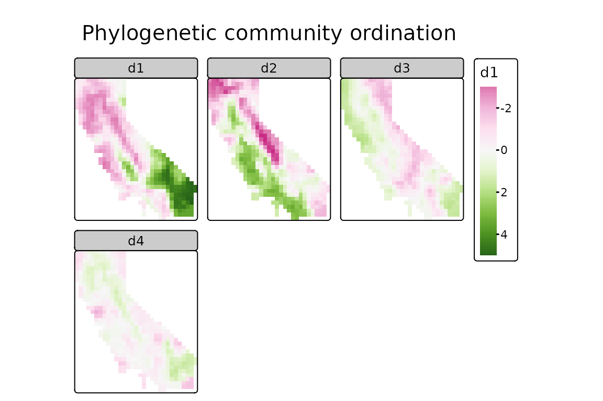
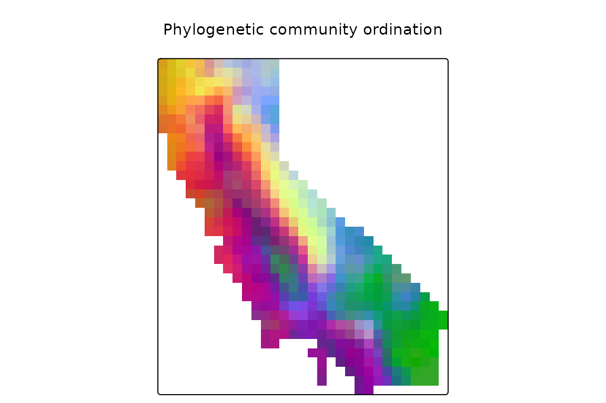
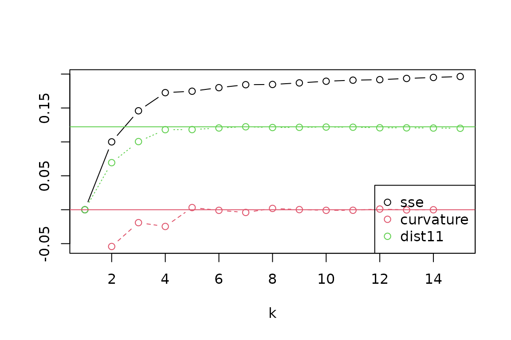

This vignette covers topics related to phylogenetic beta diversity, including calculation of pairwise dissimilarity between sites, and use of these dissimilarity values in ordination and regionalization analyses.
To get started, let’s load the phylospatial library, as
well as tmap for visualization. Note that the functions
covered here all require a phylospatial object as input;
see vignette("phylospatial-data") for details on
constructing data sets. We’ll use the moss() example data
here.
Dissimilarity
This package provides a range of methods for calculating pairwise
community phylogenetic distances among locations. It can calculate
phylogenetic versions of any quantitative community dissimilarity metric
available trough the vegan package, including the various
predefined indices provided through vegan::vegdist as well
as custom indices specified through vegan::designdist. The
default metric is Bray-Curtis distance, also known as quantitative
Sorensen’s dissimilarity. Additional choices allow for partitioning
dissimilarity in to turnover and nestedness components.
Dissimilarity is computed using the function
ps_add_dissim(), which adds a distance matrix to the
dissim slot of your phylospatial data set. Or
if you just want the matrix itself, you can use
ps_dissim().
In addition to specifying the dissimilarity index to use, these
functions include options for different ways to scale the phylogenetic
community matrix before calculating dissimilarity. Setting
endemism = TRUE will scale every lineage’s occurrence
values to sum to 1 across all sites, giving greater weight to narrowly
distributed taxa. Setting normalize = TRUE scales every
site’s total occurrence value to sum to 1 across taxa, which results in
a distance matrix that emphasizes proportional differences in
composition rather than alpha diversity gradients.
Let’s run an example using quantitative Sorensen’s index, weighted by endemism. Printing the result, we can see it now contains dissimilarity data:
ps <- ps_add_dissim(ps, method = "sorensen", endemism = TRUE, normalize = TRUE)
ps
#> `phylospatial` object
#> - 884 lineages across 1116 sites
#> - community data type: probability
#> - spatial data class: SpatRaster
#> - dissimilarity data: sorensenOrdination
Having done this, we can then assess spatial turnover patterns in a
couple ways: ordination or clustering. Ordination, which is implemented
in the function ps_ordinate(), reduces the dimensionality
of the phylogenetic community matrix, making it possible to visualize or
analyze the dominant axes of variation. Various ordination algorithms
can be selected. Let’s perform a PCA, and make maps of the first four
dimensions:
ps %>%
ps_ordinate(method = "pca", k = 4) %>%
tm_shape() +
tm_raster(col.scale = tm_scale_continuous(values = "brewer.pi_yg"),
col.free = FALSE) +
tm_title("Phylogenetic community ordination")
We can also qualitatively visualize compositional patterns by
converting ordination axes to a set of colors representing how similar
two sites are to each other, using the ps_rgb() function.
Let’s do that here, using the "cmds" (classical
multidimensional scaling) ordination algorithm, and then plot the result
using tmap::tm_rgb():
ps %>%
ps_rgb(method = "cmds") %>%
tm_shape() +
tm_rgb(col.scale = tm_scale_rgb(max_color_value = 1),
interpolate = FALSE) +
tm_title("Phylogenetic community ordination")
Regionalization
We can also perform a more formal cluster analysis that splits the
landscape into a set of evolutionary bioregions, using the
ps_regions() function. To do this, we need to specify the
clustering method and the number of clusters
(k). Choices of method include k-means and various
hierarchical clustering methods; note that results are sometimes highly
sensitive to which method is selected. The hierarchical methods require
a dissimilarity matrix calculated by first running
ps_add_dissim(), while k-means does not.
Choosing k is usually subjective. Many alternative
methods have been proposed in the literature to identify the “optimal”
number of clusters in a data set, but ecological data are often
inherently characterized by continuous gradients rather than discrete
provinces, in which case no value of k may clearly fit
best. You can use the function ps_regions_eval() to help
evaluate how well different choices for k fit the data by
comparing the variance explained by different numbers of clusters. Let’s
do that here, using the "average" hierarchical clustering
method:
ps_regions_eval(ps, k = 1:15, plot = TRUE, method = "average")
From the evaluation plot, it looks like a value of k = 4
stands out as the most distinct “elbow” in explained variance (“SSE”),
with near-maximum distance to the 1:1 line (“dist11”), and with more
negative “curvature” than its neighbors, though other choices could also
be reasonable. Let’s generate results for four regions, and then make a
map of these zones:
ps %>%
ps_regions(k = 4, method = "average") %>%
tm_shape() +
tm_raster(col.scale = tm_scale_categorical(values = "brewer.dark2"),
col.legend = tm_legend(show = FALSE)) +
tm_title("phylogenetic region")